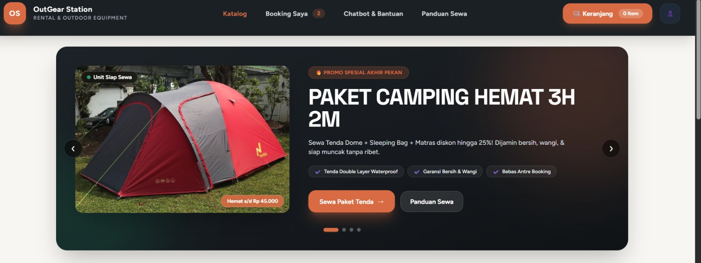
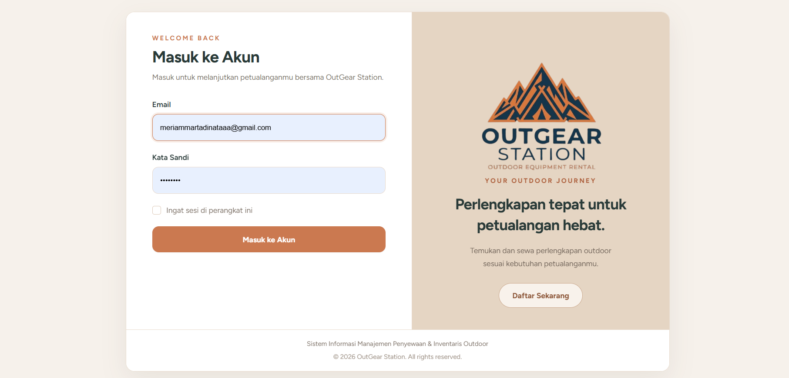
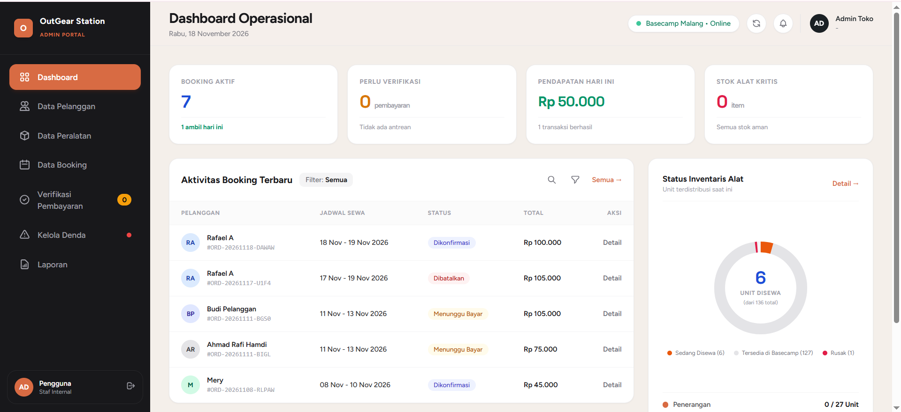
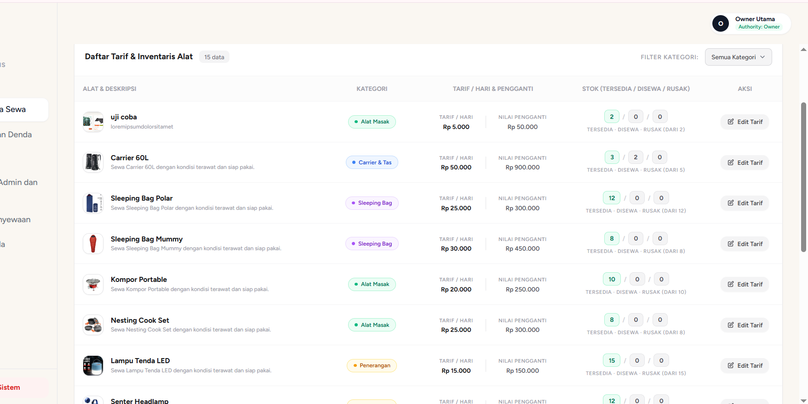
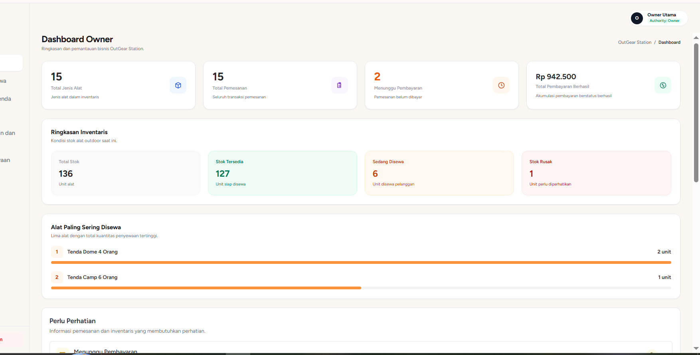
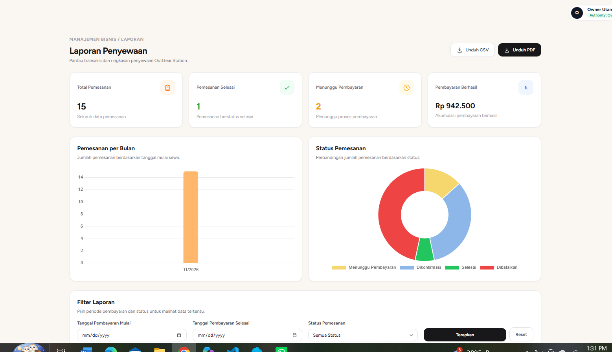

User & Access Management
Pengelolaan akun dan hak akses berdasarkan peran Owner, Admin, Petugas Gudang, dan Customer.
Pengembangan Sistem Informasi Manajemen Penyewaan dan Inventaris Peralatan Outdoor berbasis web untuk membantu pengelolaan inventaris dan proses penyewaan pada OutGear Station.

Katalog

Login

Dashboard Admin

Dashboard Petugas

Dashboard Owner

Laporan Penyewaan
OutGear Station merupakan proyek pengembangan
sistem informasi berbasis web untuk usaha
penyewaan perlengkapan outdoor di Kota Malang.
Proyek ini bertujuan membantu menggantikan proses
pencatatan semi-manual menggunakan Excel dan buku
agenda yang berisiko menyebabkan double-booking
serta ketidakkonsistenan pencatatan transaksi
dan denda.
Sistem dirancang untuk menghubungkan proses
pengelolaan inventaris, pemesanan, pembayaran,
pengembalian barang, serta pemantauan operasional
melalui dashboard dan laporan.
Pengelolaan akun dan hak akses berdasarkan peran Owner, Admin, Petugas Gudang, dan Customer.
Pengelolaan data perlengkapan outdoor, kategori, tarif sewa, jumlah stok, dan kondisi barang.
Penyediaan katalog barang dan proses pemesanan dengan pengecekan ketersediaan berdasarkan periode penyewaan.
Pencatatan pembayaran uang muka (DP) dan pelunasan transaksi penyewaan.
Pencatatan pengembalian, pemeriksaan kondisi barang, serta perhitungan denda keterlambatan.
Penyajian informasi inventaris dan transaksi untuk membantu pemilik usaha memantau kegiatan operasional.
Berperan sebagai Project Manager dalam pengembangan sistem OutGear Station. Selain mengelola perencanaan dan koordinasi proyek, saya juga terlibat langsung dalam pengembangan sistem, khususnya pada modul Owner.